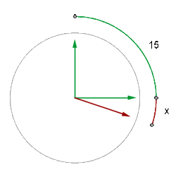
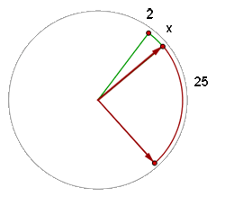
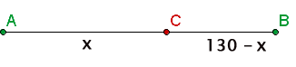
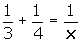
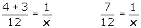

Problemas de ecuaciones de primer grado
Problemas de relojes, móviles, grifos y mezclas
1Un reloj marca las 3 en punto. ¿A qué hora entre las 3 y las 4 se superpondrán las agujas?
2Un reloj marca las 2 en punto. ¿A qué hora formarán sus agujas por primera vez un ángulo recto?
3Dos ciudades A y B distan 300 km entre sí. A las 9 de la mañana parte de la ciudad A un coche hacia la ciudad B con una velocidad de 90 km/h, y de la ciudad B parte otro hacia la ciudad A con una velocidad de 60 km/h. Se pide:
1El tiempo que tardarán en encontrarse.
2La hora del encuentro.
3La distancia recorrida por cada uno.
4Dos ciudades A y B distan 180 km entre sí. A las 9 de la mañana sale de un coche de cada ciudad y los dos coches van en el mismo sentido. El que sale de A circula a 90 km/h, y el que sale de B va a 60 km/h. Se pide:
1El tiempo que tardarán en encontrarse.
2La hora del encuentro.
3La distancia recorrida por cada uno.
5Un coche sale de la ciudad A a la velocidad de 90 km/h. Tres horas más tarde sale de la misma ciudad otro coche en persecución del primero con una velocidad de 120 km/h. Se pide:
1El tiempo que tardará en alcanzarlo.
2La distancia a la que se produce el encuentro.
6Un camión sale de una ciudad a una velocidad de 40 km/h. Una hora más tarde sale de la misma ciudad y en la misma dirección y sentido un coche a 60 km/h. Se pide:
1El tiempo que tardará en alcanzarlo.
2La distancia a la que se produce el encuentro.
7Dos ciclistas salen en sentido contrario a las 9 de la mañana de los pueblos A y B situados a 130 kilómetros de distancia. El ciclista que sale de A pedalea a una velocidad constante de 30 km/h, y el ciclista que sale de B, a 20 km/h. ¿A qué distancia de A se encontrarán y a qué hora?
8Un grifo tarda en llenar un depósito tres horas y otro grifo tarda en llenarlo cuatro horas. ¿Cuánto tiempo tardarán en llenar los dos grifos juntos el depósito?
9Un comerciante tiene dos clases de café, la primera a 40 € el kg y la segunda a 60 € el kg. ¿Cuantos kilogramos hay que poner de cada clase de café para obtener 60 kilos de mezcla a 50 € el kg?
10Se tienen dos lingotes de plata, uno de ley 0.750 y otro de ley 0.950. ¿Qué peso hay que tomar de cada lingote para obtener 1800 g de plata de ley 0.900?
11Un lingote de oro de ley 0.950 pesa 6 300 g. ¿Qué cantidad de cobre puro se habrá de añadir para rebajar su ley a 0.900?
- 1
- 2
- 3
- 4
- 5
- 6
- 7
- 8
- 9
- 10
- 11
Ejercicio 1 resuelto
Un reloj marca las 3 en punto. ¿A qué hora entre las 3 y las 4 se superpondrán las agujas?

x es el arco que describe la aguja horaria.
(15 + x) es el arco que describe el minutero.
15 + x = 12x
x = 15/11 min
Las agujas se superpondrán a la 3 h 16 min 21 s
Ejercicio 2 resuelto
Un reloj marca las 2 en punto. ¿A qué hora formarán sus agujas por primera vez un ángulo recto?

Las agujas del reloj forman un ángulo recto a las 2 h 25 min y un poco más, que llamaremos x.
x es el arco que describe la aguja horaria.
25 + x, es el arco que describe el minutero.
25 + x = 12x
x = 25/11 min
Las agujas del reloj conformarán un ángulo de 90° a las 2h 27 min 16 s.
Ejercicio 3 resuelto
Dos ciudades A y B distan 300 km entre sí. A las 9 de la mañana parte de la ciudad A un coche hacia la ciudad B con una velocidad de 90 km/h, y de la ciudad B parte otro hacia la ciudad A con una velocidad de 60 km/h. Se pide:
Soluciones:1El tiempo que tardarán en encontrarse.
90t + 60t = 300 150t = 300 t = 2 horas
2 La hora del encuentro.
Se encontraran a las 11 de la mañana .
3La distancia recorrida por cada uno.
e AB = 90 · 2 = 180 km
e BC = 60 · 2 = 120 km
Ejercicio 4 resuelto
Dos ciudades A y B distan 180 km entre sí. A las 9 de la mañana sale de un coche de cada ciudad y los dos coches van en el mismo sentido. El que sale de A circula a 90 km/h, y el que sale de B va a 60 km/h. Se pide:
Soluciones:1El tiempo que tardarán en encontrarse.
90t − 60t = 180 30t = 180 t = 6 horas
2La hora del encuentro.
Se encontraran a las 3 de la tarde .
3La distancia recorrida por cada uno.
e AB = 90 · 6 = 540 km
e BC = 60 · 6 = 360 km
Ejercicio 5 resuelto
Un coche sale de la ciudad A a la velocidad de 90 km/h. Tres horas más tarde sale de la misma ciudad otro coche en persecución del primero con una velocidad de 120 km/h. Se pide:
Soluciones:1El tiempo que tardará en alcanzarlo.
90t = 120 · (t − 3)
90t = 120t − 360 −30t = −360 t = 12 horas
Como el segundo coche sale 3 h más tarde, el tiempo que tardará en alcanzarlo será de 9 h
2La distancia a la que se produce el encuentro.
e 1 = 90 · 12 = 1080 km
Ejercicio 6 resuelto
Un camión sale de una ciudad a una velocidad de 40 km/h. Una hora más tarde sale de la misma ciudad y en la misma dirección y sentido un coche a 60 km/h. Se pide:
Soluciones:1Tiempo que tardará en alcanzarle.
e1 = e2
40t = 60 (t − 1)
40t = 60t − 60 40t − 60t =− 60 −20t = −60
t = 3h
Como el coche sale una hora más tarde, el tiempo que tardará en alcanzarlo será de 2 horas .
2Distancia al punto de encuentro.
e1 = 40 · 3 = 120 km .
Ejercicio 7 resuelto
Dos ciclistas salen en sentido contrario a las 9 de la mañana de los pueblos A y B situados a 130 kilómetros de distancia. El ciclista que sale de A pedalea a una velocidad constante de 30 km/h, y el ciclista que sale de B, a 20 km/h. ¿A qué distancia de A se encontrarán y a qué hora?

30t + 20t = 130 50t = 130
t = 130/50 = 2 h 36 min
Se encuentran a las 11h 36 min
e AC = 30 · 130/50 = 78 km
Ejercicio 8 resuelto
Un grifo tarda en llenar un depósito tres horas y otro grifo tarda en llenarlo cuatro horas. ¿Cuánto tiempo tardarán en llenar los dos grifos juntos el depósito?
En una hora el primer grifo llena 1/3 del depósito.
En una hora el segundo grifo llena 1/4 del depósito.
En una hora los dos grifos juntos habrán llenado:


7x = 12 x = 12/7 horas
Ejercicio 9 resuelto
Un comerciante tiene dos clases de café, la primera a 40 € el kg y la segunda a 60 € el kg.
¿Cuantos kilogramos hay que poner de cada clase de café para obtener 60 kilos de mezcla a 50 € el kg?
| 1ª clase | 2ª clase | Total | |
|---|---|---|---|
| Nº de kg | x | 60 − x | 60 |
| Valor | 40 · x | 60 · (60 − x) | 60 · 50 |
40x + 60 · (60 − x) = 60 · 50
40x + 3600 − 60x = 3000; − 60x + 40x = 3000 − 3600; 20x = 600
x = 30; 60 − 30 = 30
Tenemos que mezclar 30 kg de la 1ª clase y otros 30 de la 2ª clase .
Ejercicio 10 resuelto
Se tienen dos lingotes de plata, uno de ley 0.750 y otro de ley 0.950. ¿Qué peso hay que tomar de cada lingote para obtener 1800 g de plata de ley 0.900?
| 1ª ley | 2ª ley | Total | |
|---|---|---|---|
| Nº de g | x | 1800 − x | 1800 |
| Plata | 0.750 · x | 0.950 · (1800−x) | 0.900 · 1800 |
0.750 · x + 0.950 · (1 800−x) = 0.9 · 1800
0.750 x + 1 710 − 0.950x = 1 620
0.750x − 0.950x = 1 620 − 1 710
−0.2x = − 90 x = 450
1ª ley  450 g
450 g
2ª ley  1350 g
1350 g
Ejercicio 11 resuelto
Un lingote de oro de ley 0.950 pesa 6 300 g. ¿Qué cantidad de cobre puro se habrá de añadir para rebajar su ley a 0.900?
| Oro | Cobre | Total | |
|---|---|---|---|
| Nº de g | 6 300 | x | 6 300 + x |
| Oro puro | 0.950 · 6 300 | 0.900 · (6 300 + x) |
0.900 · (6 300 + x) = 0.950 · 6 300
5 670 + 0.900x = 5 985
0.900x = 315 x = 315/0.900 = 350
Cobre  350 g
350 g
 Ejercicios
Ejercicios